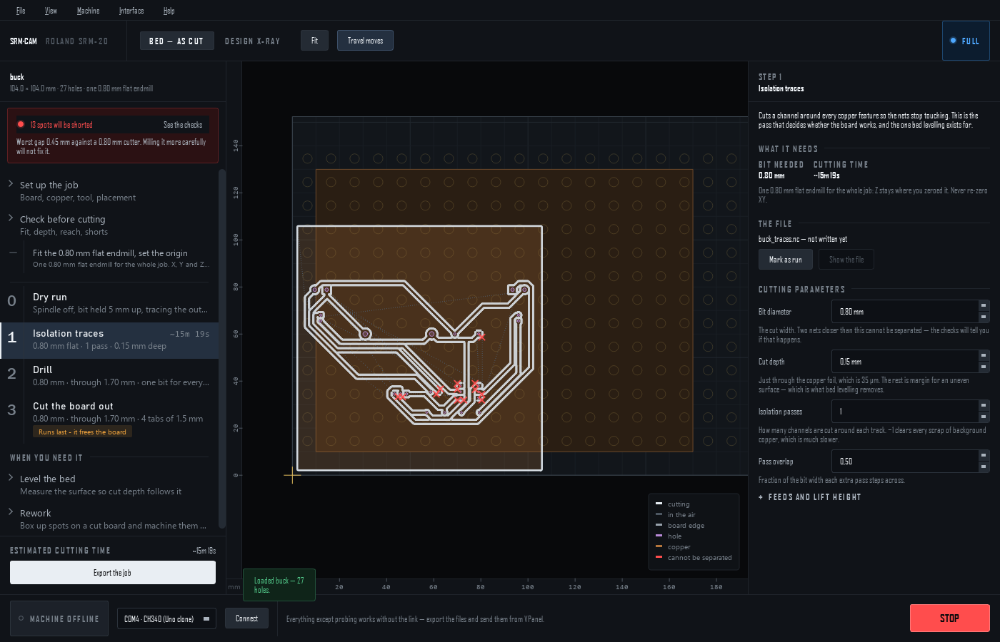

SRM-CAM
Desktop CAM for the Roland SRM-20: load KiCad Gerber + Excellon files, walk the run plan, and export ready-to-run G-code — with a probed surface the cut follows, several boards on one sheet, and double-sided registration built in.

How it works
One program for the whole SRM-20 flow. Every step of the run plan is a file you send from VPanel — traces, drill, cut-out — and step 0 is a spindle-off dry run that traces where the board will be cut before anything touches copper.
With the Arduino fitted, SRM-CAM also reads the machine's position, jogs, probes the bed and zeroes Z — VPanel still plays the files and sets the spindle speed. Machine control →
Guide contents
Highlights
- The checks are on screen, not in a box. Fits the bed, Z reach from the probed surface, nets the bit cannot separate (marked on the traces), the job on the copper, the screws in reach — all the time, and the worst finding stays on the rail until it is fixed.
- Depth you can trust. Probe the surface electrically and the cut follows it, per face. A board held at points gets a small, capped extra depth for the give under the cutter, and you can set it yourself.
- Several boards, one run. Put two designs on one sheet; touching boards share one cut, and an edge on the sheet's edge is not cut at all.
- Double-sided that registers. Dowel pins (sub-0.1 mm, nothing to measure) or fiducial holes found electrically after the flip, with the top files re-written to where the board actually landed.
- STOP is part of the window. Never hidden by a tier, a step or a dialog; Esc does the same from anywhere.
- A run sheet, not a text file. Export writes the files and puts the plan in front of you: order, bit, depth, time, and the one rule — never re-zero XY.
A finished board
Both sides of a double-sided board milled with SRM-CAM, registered off dowel pins, held to the light: